Cloud es un conjunto de tecnologías que facilitan un nuevo modelo de acceso a servicios.
Máquinas que actúan simultáneamente como cliente y servidor agregando capacidad de computo.
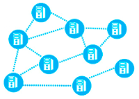
Arquitecturas distribuidas con máquinas independientes pero similares combinando las capacidades disponibles.
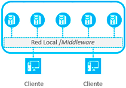
Amplía el ámbito geográfico del Cluster y aumenta la heterogeneidad de las máquinas.
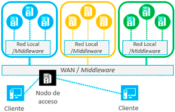
Posible gracias a tecnologías de virtualización facilitando el manejo de los recursos.
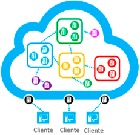
Cloud Computing es un modelo que permite el acceso por red ubicuo, conveniente y bajo demanda a un conjunto compartido de recursos computacionales configurables que pueden ser rápidamente aprovisionados y liberados con un esfuerzo mínimo de administración o interacción con el proveedor de servicios.
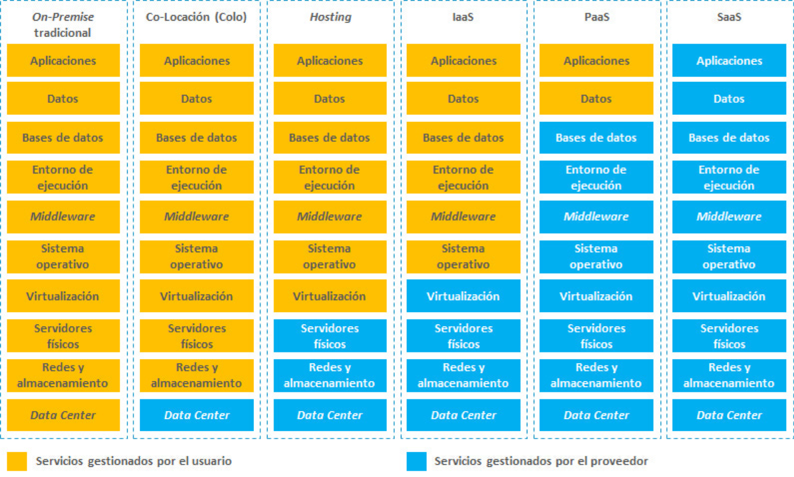
En este caso la infraestructura se dedicada en exclusiva a una única organización.
Los recursos están dedidados en exclusiva a un conjunto de organizaciones.
La infraestructura está disponible para el acceso del público general.
Se trata de un tipo de infraestructura que combina elementos de los tres modelos anteriores.
Existen determinadas características que hay que tratar especialmente en el caso de las aplicaciones cloud:
Fracción de tiempo total que un sistema esta en funcionamiento y es capaz de atender peticiones.
En el modelo clásico la escalabilidad muchas veces nos hacia desperdiciar recursos, en cambio, con el cloud computing vamos gestionando nuestros recursos a demanda con una mayor adaptación al cambio.
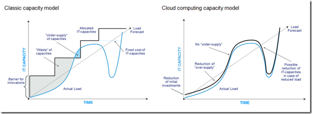
Capacidad del sistema para detectar errores, recuperarse y volver a un estado normal.
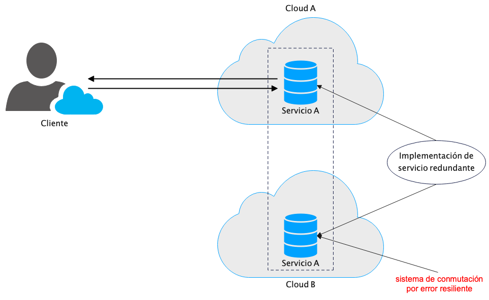
Capacidad del sistema para hacer frente a amenazas externas.
Capacidad del sistema para responder al aumento de carga.
La aplicación queda dividida en diferentes capas especializadas en determinadas funciones lógicas.
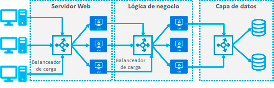
La comunicación entre el front–end y el back–end se consigue a través de una cola de mensajes.
Front-end que recibe solicitudes.
Trabajador back-end intensivo en cómputo.
Comunicación en cola de mensajes asíncronos.
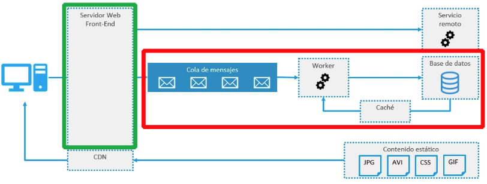
Aplicaciones formadas por muchos servicios independientes que implementan capacidades concretas.
La API actúa como fachada entre cliente y servicio.
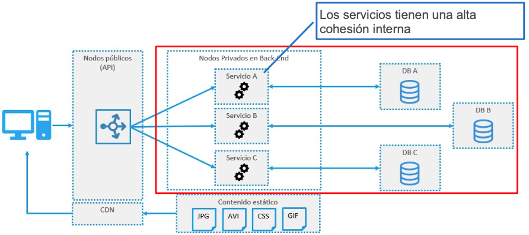
Separa las operaciones de escritura y lectura, aislando las partes que modifican los datos de las que los leen.
Esta independencia facilita el escalado.
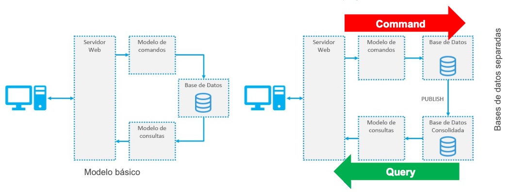
Patrones específicos que solucionan problemas concretos habituales, mejorando la disponibilidad, la escalabilidad o la seguridad.
Acceso desde una variedad de dispositivos, con distintas versiones y necesidades de recursos, dificultando el desarrollo y el mantenimiento de la aplicación.
Utilizar Back-ends específicos, facilitando el diseño, la implementación y el mantenimiento.
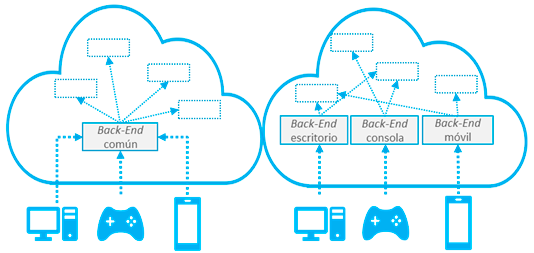
Un servicio es consumido por varias tareas, siendo difícil predecir la carga futura y el número de peticiones que recibirá.
Introducir una cola de peticiones intermedia entre las tareas y el servicio, permitiendo que los servicios sean suministrados a un ritmo más controlado.
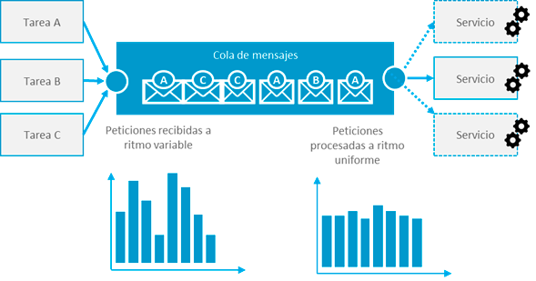
Cuando tenemos un almacén de datos en un único servidor produciendose:
Repartir los datos en shards con información parcial, facilitando el escalado horizontal.
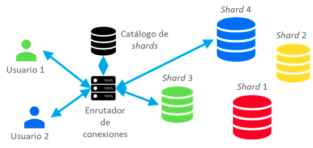
Hay que realizar un conjunto de operaciones de complejidad variable sobre la información recibida.
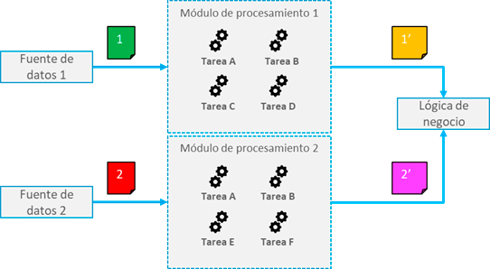
Descomponer el procesamiento en operaciones individuales, de manera que sea posible reutilizar módulos o filtros en operaciones similares en el procesamiento de otros datos.
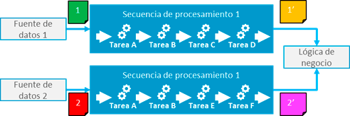
Cuando es necesario el orden de procesamiento de las tareas y hay que priorizar peticiones.
Las peticiones en cola llevan asociadas una prioridad:
Reordenamiento dentro de la cola.
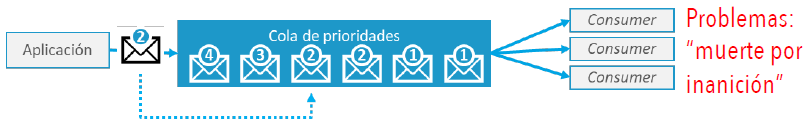
Colas según el nivel de prioridad.
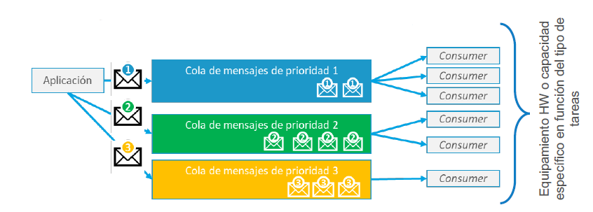
Operaciones continuas de lectura/escritura sobre bases de datos lentas perjudican el rendimiento del sistema.
Almacenar los datos en una memoria más rápida (caché), de manera que cuando sean solicitados ya estén disponibles.
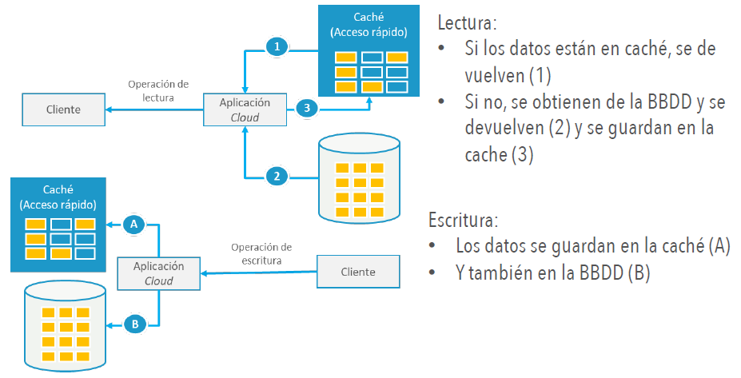
Operaciones rutinarias e intensivas de acceso a contenido estático (archivos, audio...)
Alojar los recursos estáticos en servidores de almacenamiento externos a las instancias de cálculo.
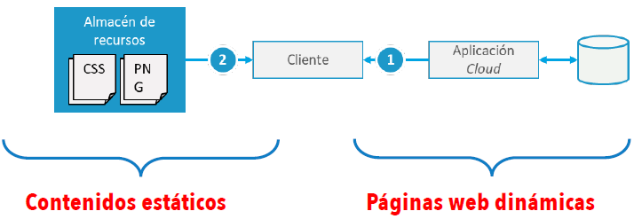
Monitorización de los servicios ofrecidos.
Implementar un supervisor de estado externo que envía solicitudes periódicas a un punto de conexión de la aplicación cloud.
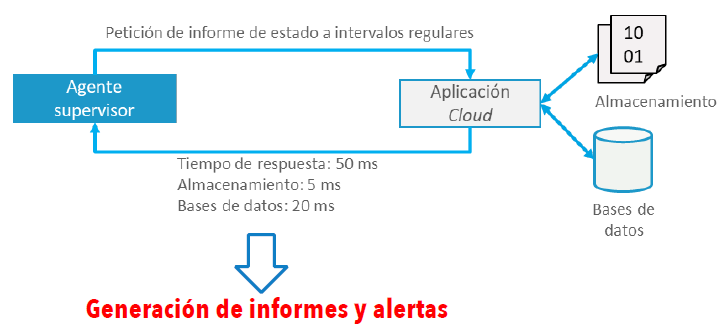
Las aplicaciones cloud pueden fallar de manera transitoria (problema de conectividad, sobrecarga...)
Dependiendo del tipo de error:
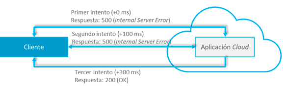
Los usuarios deben autenticarse ante servicios de organizaciones diferentes.
Delegar el proceso de autenticación en un proveedor de identidades externo especializado.
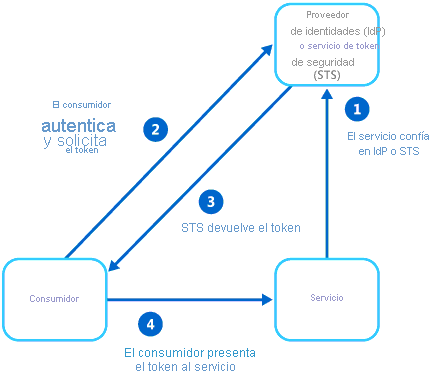
Las mismas aplicaciones que atienden a las solicitudes manipulan los datos, lo que conlleva que, si el sistema está comprometido los datos son vulnerables.
Colocar un host intermedio entre los clientes y los servicios, de manera que verifica las solicitudes enviadas y, en caso de ser válidas, las reenvía a la aplicación.
El problema de este patrón es una perdida de rendimiento.
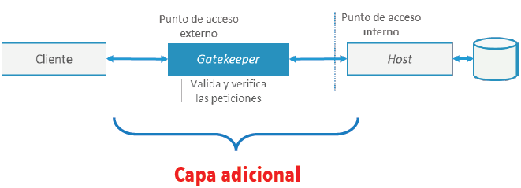